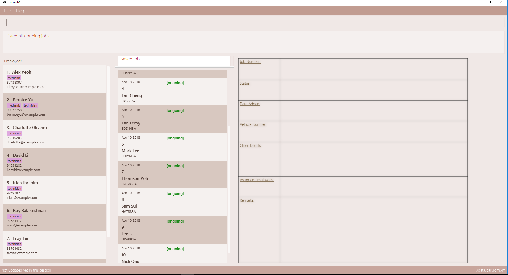

By: Team W09-B1 Since: Feb 2018 Licence: MIT
- 1. Introduction
- 2. About This User Guide
- 3. Setting Up CarviciM
- 4. Quick Start
- 5. Features
- 5.1. Viewing help :
help - 5.2. Adding a job entry:
addj - 5.3. Closing a job entry:
closej - 5.4. Adding remark to a job:
remark - 5.5. Listing all jobs :
listj - 5.6. Locating jobs by keyword:
findj - 5.7. Archiving job entries:
archive - 5.8. Adding an employee:
adde - 5.9. Listing all employees :
liste - 5.10. Deleting an employee :
deletee - 5.11. Sorting all employees :
sort - 5.12. Selecting employees by list number:
selecte - 5.13. Locating employees by name:
finde - 5.14. Changing a command word :
set - 5.15. Importing jobs from an excel file
- 5.16. Setting a theme :
theme - 5.17. Listing entered commands :
history - 5.18. Undoing previous command :
undo - 5.19. Redoing the previously undone command :
redo - 5.20. Clearing the application :
clear - 5.21. Exiting the program :
exit - 5.22. Saving the data
- 5.23. Email assigned employees belonging to a job :
email - 5.24. Encrypting data files
[coming in v2.0]
- 5.1. Viewing help :
- 6. FAQ
- 7. Command Summary
1. Introduction
Welcome to CarviciM! CarviciM (short for Car Servicing Manager) is a desktop application for car servicing managers to manage car servicing jobs with convenience and ease. You can use Carvicim to add jobs, close ongoing jobs, import large number of job entries, manage employees for job assignment and notify employees of jobs through email. CarviciM is optimized for those who prefer to work with a Command Line Interface (CLI) while still having the benefits of a Graphical User Interface (GUI). If you can type fast, CarviciM can get your management of servicing jobs done faster than traditional GUI apps. Interested to speed up your car servicing job allocation process? Jump to the Section 3, “Setting Up CarviciM” to get started. Enjoy!
2. About This User Guide
This user guide shows you how to get started using the CarviciM. It shows you how to setup the application, and also how to perform operations in the CarviciM which are lead by examples.
Legend
| This icon represents something noteworthy |
| This icon represents a useful tip |
This represents an input command
3. Setting Up CarviciM
This section will show you how to setup the neccessary environment in order to run CarviciM on your desktop.
-
Ensure you have Java version
1.8.0_60or later installed in your Computer.Having any Java 8 version is not enough.
This app will not work with earlier versions of Java 8. -
You can download the latest
CarviciM.jarhere. -
Copy the file to the folder you want to use as the home folder for your CarviciM.
Please ensure that the no files in the directory are named comments.temp or workbook.temp as this will affect the application. -
Double-click the file to start the app. You should see the Graphical User Interface (GUI) as shown in the image below.
You are all set to use CarviciM now! You can read the next section to find out more on how to use CarviciM.
4. Quick Start
This section will cover the basics you need to know for using the guide and the application.
4.1. Various Regions In The GUI
The GUI is made up of various regions as shown in the image below.
- Command Box
-
A region on the User Interface which allows you to type in commands.
- Job List Panel
-
A region on the User Interface where you can view the list of jobs.
- Employee List Panel
-
A region on the User Interface where you can view the list of employees.
- Job Display Panel
-
A region on the User Interface which shows you the details of a selected job.
- Result Display
-
A region on the User Interface which you can see the feedback to a command, entered in the command box.
4.2. Executing Your First Command In CarviciM
You can execute a command by typing it in the command box and press Enter.
e.g. typing help and pressing Enter will open the help window.
Here are some example commands you can try:
-
liste: lists all employees' contacts -
adden/John Doe p/98765432 e/johnd@example.com: adds an employee namedJohn Doeto CarviciM. -
deletee3: deletes the 3rd employee shown in the current list -
exit: exits the app
4.3. Command Format
Before reading more about commands, you should take note of the command format used in the user guide:
-
Words in
UPPER_CASEare the parameters to be supplied by the user e.g. inadde n/NAME,NAMEis a parameter which can be used asadde n/John Doe. -
Items in square brackets are optional e.g
n/NAME [t/TAG]can be used asn/John Doe t/mechanicor asn/John Doe._ -
Items with
…after them can be used multiple times including zero times e.g.[t/TAG]…can be used ast/mechanic,t/technicianetc. -
Items with
+after them can be used multiple times but has to be used at least once e.g.w/ASSIGNED_EMPLOYEE_INDEX+can be used asw/4,w/5etc. -
Parameters can be in any order e.g. if the command specifies
n/NAME p/PHONE_NUMBER,p/PHONE_NUMBER n/NAMEis also acceptable.
For details of each command, you can refer to Section 5, “Features”.
5. Features
This section will explain to you how you can use the features of CarviciM.
5.1. Viewing help : help
To find out more on using CarviciM, you can use this command to bring out the help menu.
Format: help
5.2. Adding a job entry: addj
To add a new job entry into CarviciM, you can use this command.
Format: addj n/NAME p/PHONE_NUMBER e/EMAIL v/VEHICLE_NUMBER w/ASSIGNED_EMPLOYEE_INDEX+
|
Example:
addj n/John Doe p/98765432 e/johnd@example.com v/bhj123 w/3
You will see "New job added: … " in the result display.
The job list panel will be updated to display the newly added job.
5.3. Closing a job entry: closej
To indicate that a job is completed in CarviciM, you can use this command.
Format: closej j/JOB_NUMBER
Example:
closej j/2
This command closes the ongoing job of number 2 in CarviciM.
You will see "Closed Job: 2" in the result display.
You will see the job of number 2 have its status shown as "closed" in the job list panel.
5.4. Adding remark to a job: remark
To add remark or special note to an ongoing job entry, you can use this command.+
Format: remark j/JOB_NUMBER r/YOUR_REMARK
Example:
remark j/2 r/An urgent work that should be completed asap
This command will add the remark "An urgent work that should be completed asap" to a job entry of a job number "2".
You will see the message "Remark Added: An urgent work that should be completed asap" shown in the result display.
5.5. Listing all jobs : listj
To view a list of all jobs in CarviciM, you can use this command.
Format: listj
|
5.6. Locating jobs by keyword: findj
To find jobs of specific details, you can use this command.
Format: finde KEYWORD [MORE_KEYWORDS]
|
Examples:
-
Example 1:
findj John
You will see all jobs withjohnas their client name (not case-sensitive), shown in the job list panel. -
Example 2:
findj Apr Feb
You will see all jobs withAprorFebas their job detail (not case-sensitive), shown in the job list panel.
5.7. Archiving job entries: archive
To archive job entries within a specified range in CarviciM, you can use this command.
Format: archive sd/START_DATE ed/END_DATE
|
Example:
archive sd/Mar 25 2018 ed/Apr 03 2018
The command will save the job entries within the selected date range in CarviciM.
You will see "Archived Successfully" in the result display.
You will see the newly created archive file.
5.8. Adding an employee: adde
To add details of a new employee into CarviciM, you can use this command.
Format: adde n/NAME p/PHONE_NUMBER e/EMAIL
Example:
adde n/John Doe p/98765432 e/johnd@example.com
The command will add the details of the new employee into CarviciM.
You will see "New employee added: …" followed by details of the new employee.
You will see the newly added details of the employee in the employee list panel.
5.9. Listing all employees : liste
To view a list of employee details in CarviciM, you can use this command.
Format: liste
5.10. Deleting an employee : deletee
To remove the details of an employee from CarviciM, you can use this command.
Format: deletee INDEX
|
Examples:
-
Example 1:
liste
You will see a list of employees displayed in the employee list panel.+deletee 2
You will see an updated employee list panel which has the 2nd employee removed. -
Example 2:
finde Betsy
You will see the results of thefindecommand which shows all employees with matching keyword name, in the employee list panel.deletee 1
You will see an updated employees list panel which has the 1st employee removed.
5.11. Sorting all employees : sort
To sort the list of employees alphabetically for easy viewing, you can use this command.
Format: sort
5.12. Selecting employees by list number: selecte
To select a specific employee from the employee list panel and display the assigned jobs, you can use this command.
Format: selecte INDEX
|
Examples:
-
Example 1:
liste
You will see a list of employees displayed in the employee list panel.selecte 2
You will see an updated job list panel which has the jobs of the 2nd employee. -
Example 2:
finde Betsy
You will see the results of thefindecommand which shows all employees with matching keyword name.selecte 1
You will see an updated job list panel which has the jobs of the 1st employee.
5.13. Locating employees by name: finde
To search for employees whose names contain any of the given keywords, you can use this command.
Format: finde KEYWORD [MORE_KEYWORDS]
|
Examples:
-
Example 1:
finde John
You will see all employees withjohnas their name (not case-sensitive), shown in the employee list panel. -
Example 2:
finde Betsy Tim John
You will see all employees withBetsy,Tim, orJohn(not case-sensitive), shown in the employees list panel.
5.14. Changing a command word : set
To set an easy to use word in place of a default command word, you can use this command.
Format: set OLD_COMMAND_WORD NEW_COMMAND_WORD
|
Examples:
-
Example 1:
set adde a
Setsaddecommand word toausing default.
You will see "adde has been replaced with a!" in the result display. -
Example 2:
set deletee d
Setsdeleteecommand word todusing default.
You will see "deletee has been replaced with d!" in the result display.
5.15. Importing jobs from an excel file
5.15.1. Importing a new excel file: import
To load your excel file by filename or filepath that contains new job entries, you can use this command.
Format: import FILE_PATH
|
Example:
import excel.xlsx
Imports file excel.xlsx.
5.15.2. Importing and accepting all job entries in an excel file: importAll
Similar to import command, importAll also loads an excel file,
additionally it accepts all job entries and saves the reviews of the jobs. importAll is
equivalent to an import, acceptAll and
save.
| You can use this command to import all job entries from an excel file to save time. |
Example:
importAll excel.xlsx
Imports file excel.xlsx, accepts all job entries and saves the reviewed job entries as an external excel file.
5.15.3. Switching views between unreviewed jobs and jobs in CarviciM: switch
You can use this command to switch between the list of unreviewed jobs and jobs in CarviciM.
Format: switch
5.15.4. Accepting and rejecting changes
You can use 4 commands when reviewing changes:
* accept NUMBER
* reject NUMBER
* acceptAll
* rejectAll
Accepting 1 job: accept
To accept a job with job index NUMBER in the imported list, you can use this command.
Format: accept NUMBER
Example:
accept 1
Accepts the job entry with job index number 1 and removes it from imported list.
Accepting all remaining imported jobs: acceptAll
To accept all remaining jobs, you can use this command.
Format: acceptAll
Example:
acceptAll
Accepts all remaining job entries and clears the imported list.
Rejecting 1 job: reject
To reject a job with job index NUMBER in the imported list, you can use this command.
Format: reject NUMBER
Example:
reject 1
Rejects job entry with job index number 1 and removes it from imported list. It is not added to CarviciM.
Rejecting all remaining imported jobs: rejectAll
To reject all remaining jobs in the imported list, you can use this command.
Format: rejectAll
Example:
rejectAll
Rejects all remaining job entries and clears the imported list.
5.15.5. Writing comments to your reviews Coming in V1.5
While accepting or rejecting changes, you can enter your comments behind the command.
|
You can type any sentence as a comment, as long as it is separated from the last argument with a spacebar character. |
Examples:
-
Example 1:
accept 1good job`
Accepts first job and attaches "good job" as a comment to the first job. -
Example 2:
acceptAll well done
Accepts all remaining imported jobs and attaches "well done" as a comment to all the remaining imported jobs. -
Example 3:
reject 1 Speak to you during tomorrow’s meeting.
Rejects first job and attaches "Speak to you during tomorrow’s meeting." as a comment to the first job. -
Example 4:
rejectAll Please check the customer details.
Rejects all remaining imported jobs and attaches "Please check the customer details." as a comment to all the remaining imported jobs.
5.15.6. Sharing your feedback with your employees:
CarviciM autosaves your comments to an excel file with -comments.xls or -comments.xlsx appended, in the same directory.
5.16. Setting a theme : theme
To set the theme of the application for a change of working environment, you can use this command.
Format: theme INDEX
|
Example:
theme
You will see the list of valid themes to choose from in the result display.
theme 1
You will see the theme of the application set as the selected one.
5.17. Listing entered commands : history
To find out what commands that you have executed recently, you can use this command to list a history of executed commands in reverse chronological order.
Format: history
|
Pressing the ↑ and ↓ arrows will display the previous and next input respectively in the command box. |
5.18. Undoing previous command : undo
To reverse an undoable command that was executed by mistake, you can use this command to restore CarviciM to the state before the execution of that command.
Format: undo
|
Undoable commands: those commands that modify CarviciM’s content ( |
Examples:
-
Example 1:
deletee 1
Deletes the first employee in CarviciM.+You will see that the first employee is no longer displayed in the employee list panel.liste
Shows all employees in CarviciM.
You will not see the deleted employee of index 1 in employee list panel.undo(reverses thedelete 1command)
You will see the deleted employee present in the employee list panel again. -
Example 2:
closej j/1
You will see that job number 1 is removed from the job list panel.undo(reverses theclosej j/1command)
You will see that job number 1 is added back into the job list panel.undo
Theundocommand fails as there are no undoable commands.
5.19. Redoing the previously undone command : redo
To reverse an unwanted undo command that was executed, you can use this command.
Format: redo
Examples:
-
Example 1:
deletee 1
You will see that the first employee is removed from the employee list panel.undo(reverses thedeletee 1command)
You will see that the deleted employee is added back into the employee list panel.redo(reapplies thedeletee 1command)
You will see that the same employee is removed from the employee list panel again. -
Example 2:
closej j/1
You will see that the job number 1 has its status changed to "closed" in the job list panel.deletee 1
You will see that the first employee is removed from the employee list panel.undo(reverses thedeletee 1command)
You will see that the deleted employee is added back into the employee list panel.undo(reverses theclosej j/1command)
You will see that the closed job number 1 has it status changed to "ongoing" in the job list panel.redo(reapplies theclosej j/1command)
You will see that the job number 1 has its status changed back to "closed" again, in the job list panel.redo(reapplies thedeletee 1command)
You will see that the same employee is removed from the employee list panel.
5.20. Clearing the application : clear
To have an empty CarviciM app, you can use this command to clear everything in the app.
Format: clear
|
|
5.21. Exiting the program : exit
To exit the program, you can use this command.
Format: exit
5.22. Saving the data
CarviciM data are saved in the hard disk automatically after any command that changes the data.
There is no need to save manually.
For your convenience, authorization information will be stored on your computer’s file system, even after closing and reopening CarviciM, so you will never need to log in again.
5.23. Email assigned employees belonging to a job : email
V1.4 (current):
You can use this command to send an email to a dummy email address.
Format: email
V1.5 (future):
You can use this command to send a notice email to all assigned employees of a job.
Format: email JOB_NUMBER
5.24. Encrypting data files [coming in v2.0]
{explain how the user can enable/disable data encryption}
6. FAQ
Q: How do I transfer my data to another Computer?
A: Install the app in the other computer and overwrite the empty data file it creates with the file that contains the data of your previous Address Book folder.
7. Command Summary
-
Add Job
addj n/NAME p/PHONE_NUMBER e/EMAIL v/VEHICLE_NUMBER w/ASSIGNED_EMPLOYEE_INDEX+
e.g.addj n/James Ho p/22224444 e/jamesho@example.com v/saa213 w/22 -
Close Job
closej j/JOB_NUMBER
e.g.closej j/1232 -
Archive job entries
archive sd/START_DATE ed/END_DATE
e.g.archive sd/Mar 25 2018 ed/Apr 03 2018 -
Add Employee
adde n/NAME p/PHONE_NUMBER e/EMAIL [t/TAG]…
e.g.adde n/James Ho p/22224444 e/jamesho@example.com t/mechanic -
Delete Employee :
deletee INDEX
e.g.deletee 3 -
Select Employee :
selecte INDEX
e.g.selecte 1 -
Find Employees :
finde KEYWORD [MORE_KEYWORDS]
e.g.finde James Jake -
List Employee :
liste -
Sort Employee :
sort -
Import excel file :
import
e.g.import excel.xls -
Accept imported job :
accept NUMBER
e.g.accept 1 -
Reject imported job :
reject NUMBER
e.g.reject 1 -
Accept all imported job :
acceptAll
e.g.acceptAll -
Reject all imported job :
rejectAll
e.g.rejectAll -
Save comments on job imports :
save
e.g.save -
Help :
help -
History :
history -
Undo :
undo -
Redo :
redo -
Email Assigned Employees Of A Job :
email JOB_NUMBER
e.g.email 123 -
Change Command Word :
set
e.g.set adde a -
Theme :
theme INDEX
e.g.theme 1 -
Clear entire CarviciM :
clear